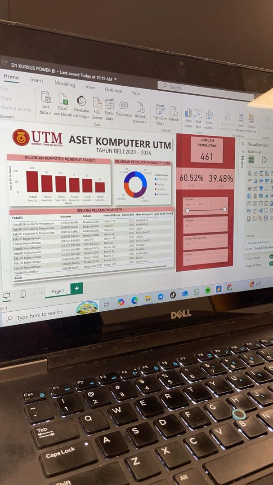
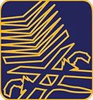
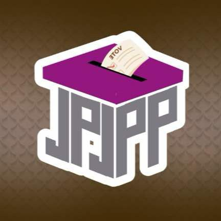
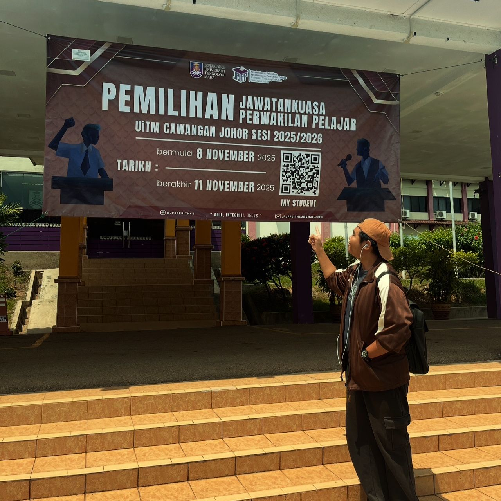
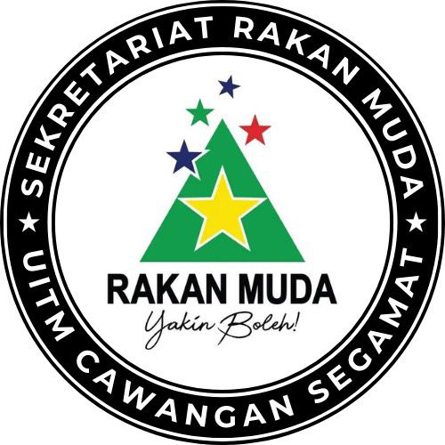
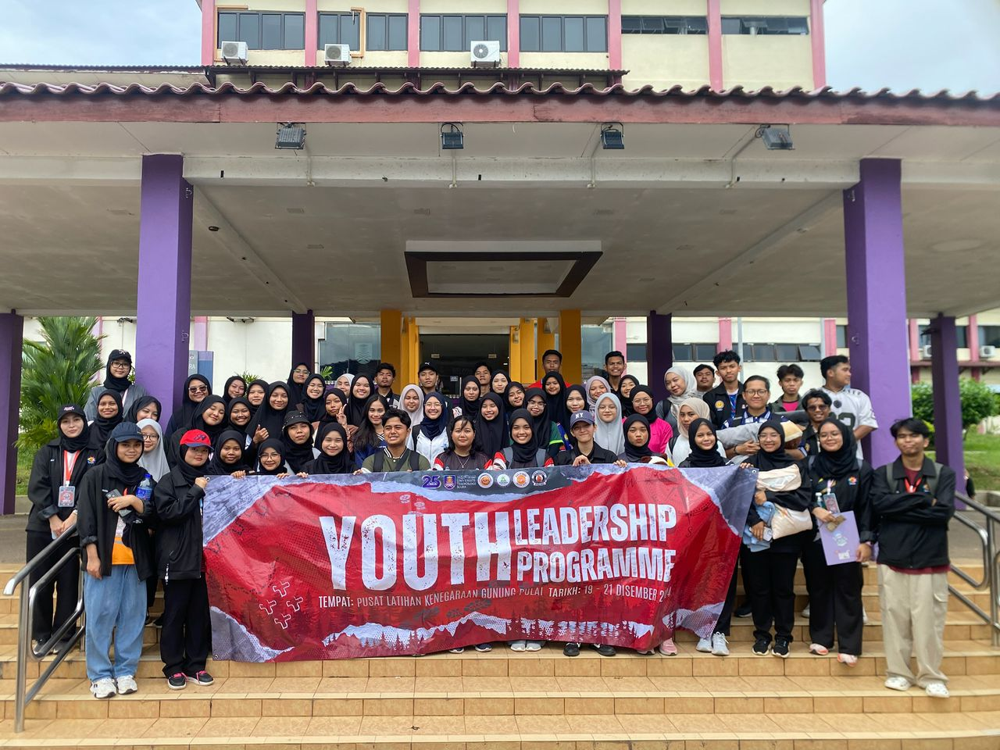
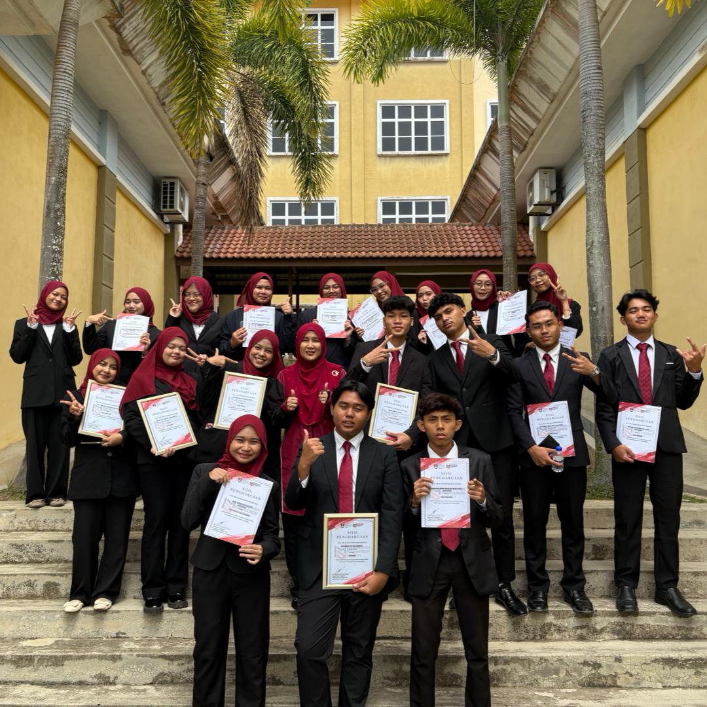

UTM

UTM Activity
Internship Experience
- Position: Employee Records Management Assistant
- Duration: 2+ Months
- Highlight: Collecting, updating, and maintaining employee personal data in the record system.
- Highlight: Storing important documents such as contracts, appointment letters, performance reports, and leave records.

MPP
 MPP Activity
MPP Activity
Student Representative Council
- Position: Secretariat of Infostructure and Corporate Communications
- Duration: 1 Year
- Highlight: Managing communication strategies, information infrastructure, and dissemination of official information.

JPJPP

JPJPP Activity
Campus Election Committee
- Position: President
- Duration: 6 Months
- Highlight: Planning and organizing the overall campus election process.

SRM

SRM Activity
Rakan Muda
- Position: Vice President
- Duration: 1 Year
- Highlight: Supported youth events and initiatives.
IMS

IMS Activity
Club Faculty
- Position: President
- Duration: 6 Months
- Highlight: Assisting the faculty in implementing initiatives for students under the Faculty of Information Science.